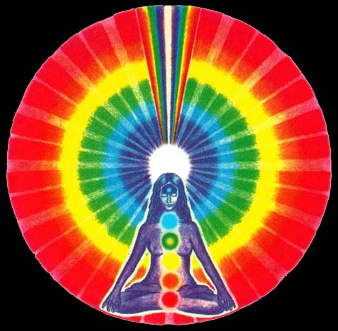
Original illustration from The Chakra-Handbook
by Shalila Sharamon and Bodo j. Baginski
Note: Due to the length of this site, you may want to BOOKMARK this page NOW and return when you have more time. Please return soon, and often.
MENU
INTRODUCTION
WHAT ARE CHAKRAS?
THE SEVEN PRIMARY CHAKRAS
The information contained within this site was derived from copious notes I have collected over the years from a variety of sources long forgotten, and the following texts:
Wisdom of the Mystic Masters by Joseph Weed
The Chakra Handbook by Shalila Sharamon and Bodo J. Baginski
The Chakras by C.W. Leadbeater
Eastern Body Western Mind by Anodea Judith
INTRODUCTION
It is said that when you begin to develop your senses, a new and fascinating world opens before you; the hidden world suddenly unveils itself - your perception heightens and your thoughts and feelings are expressed before your very own eyes in color and form.
There is more to the human body than the physical body. Unfortunately, most people consider the physical body and the material world to be the only reality that exists. They believe this because for them, these are the only things that can be discerned with their own physical senses, and I might add, understood by their rational mind. But there are numerous energy bodies within and around the human body. These energy bodies are:1. The ethereal body
2. The emotional (astral) body
3. The mental body
4. The spiritual body
Each energy body possesses its own vibrational frequency, from the lowest (ethereal) to the highest (spiritual).
In addition, there is a complex energy system that is at work, which the body could not exist without. This energy system consist of energy bodies, namely:
1. the chakras the (or energy centers)
2. and the nadis (also known as energy channels)
Nadi is a Sanskrit word meaning, "pipe" or "vein." Nadis are akin to a network of channels or arteries that transport prana (vital energy) throughout the human being's energy system.
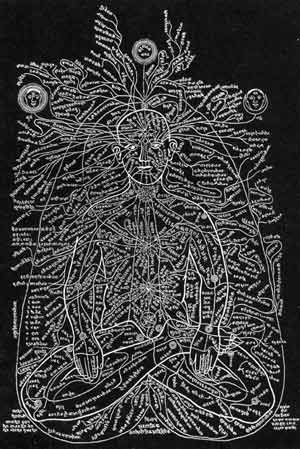
The above illustration depicts the chakra system
and the large number of secondary chakras,
including the complex network of nadis.
These nadis unite into 14 main channels,
which correspond to the main
primary and secondary chakras.
Ancient Indian texts say there are 72,000 nadis in the human body, whereas other archaic texts speak of 350,000 nadis. The most important nadis are called the (1) sushumna (2) ida, and (3) pigala. The nadis of one energy body are connected to the nadis of the neighboring energy body via the chakras.
WHAT IS PRANA?
Prana is the primal source of all forms of energy and manifests itself in various frequencies. Your level of consciousness (awareness) determines the frequencies of prana you are capable of receiving and storing. One form of prana exists in the air, and one way we can retrieve it is through proper breathing (exercises).
Prana is equivalent to the force of "vitality." Vitality is radiated on all levels and manifests itself in the physical, emotional and mental realms. This force is NOT electricity, albeit in some ways it represents it.
One common description of the "vital force" (field) or "etheric body" is a silvery haze that extends a few inches beyond the skin. You can see this field under special conditions using ultra-violet light or your own eyes.
IS IT POSSIBLE TO SEE THIS "ETHERIC" ENERGY FIELD?
Yes. Here's a technique that works for me: Under low light conditions, preferably at night, extend your hand in front of you then unfocus your eyesight so that the outer parts of the retina come into play. You will see a vague undifferentiated field that outlines your hand. This field is your etheric body. All you need to do is learn is HOW-to-SEE in the dark - to SEE the AIR. With practice, you will catch on and learn how to focus your eyesight so that you can SEE this vital or etheric field, which is associated with the dense physical body.
There is an aura associated with the "mental body," which is where "thought" takes place, and there is an aura associated with the "astral body," where the "feeling" processes are, but our attention within this site will focus primarily on the "etheric" field.
HOW IS PRANA DISTRIBUTED IN THE BODY?
In the dense, physical body, the blood carries chemical material in a liquid solution; the red corpuscles taking oxygen to the tissue and bring back carbon dioxide from these and disposing of it. Well, the radiations in the "vital field" or "etheric body" absorb and carry "vitality" or "prana" from the other atmosphere and dispose of subtle waste matter in a similar manner.
Vitality action differs from electricity, light and heat. Vitality causes oscillation of the atoms as a whole, which is enormous compared to that of the atom. The "vitality force" comes to the atom from WITHIN, NOT from without. It enters the atom along with the force that holds the atom together. When this "vitality force" wells up within an atom, it gives it a power of attraction which immediately draws six (6) other atoms around it, thus creating a sub-atomic element called, "globules."
So "globules" are charged with the force of "prana." Globules are very good for you, btw. Under certain conditions, they can be seen dancing in the air as tiny points of brilliant light. They are also sunshine dependent for their power of manifestation. You won't see many under cloudy days. Perhaps this is why people are not as jovial or in a depressed or sluggish mood after being exposed to many cloudy and/or rainy days in a row.
Chakras are energy centers. They function like receivers and transformers of the various forms of prana. Through the nadis, the chakras take in the vital energy and transform it into the frequencies needed by the various areas of the physical bodies for sustenance and development.
Each chakra is connected with one of the elements of earth, water, air ether and mind - mind being an instrument of consciousness. These elements are states of matter and NOT elements as we understand them in modern chemistry. They are equivalent to the terms: solid, liquid, fiery or gaseous, airy, and etheric - which are somewhat analogous to the physical, astral and mental planes and sub-planes.
Chakra is a Sanskrit word, meaning, "wheel." The human chakras are "wheel-like" vortices, or saucer-shaped depressions that exist on the surface of the etheric human body.
Traditional writings say there are 88,000 chakras in the human body. Most are extremely small and play a minor role in your energy system. However, there are approximately 40 secondary chakras that are of significance; these are located in your spleen, the back of your neck, the palms of your hands and the soles of your feet. But for brevity purposes, we will only explore the seven (7) primary chakras here.
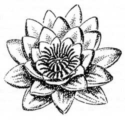
If we look down into the bell of a convoluted-type flower, we would get the general appearance of a chakra.
The seven primary chakras are located along a central vertical axis of our spine and open toward the front of the body like a blossom (see Figure 2 below). These circular energy centers are in constant motion, rotating, attracting energy - receiving or radiating.
At the center of each chakra, in its deepest point, is a stem-like channel that extends to the spine and merges with it, thus connecting the individual chakra with the sushumna (the most important energy channel) which ascends within the spine to the top of the head. More on that later.
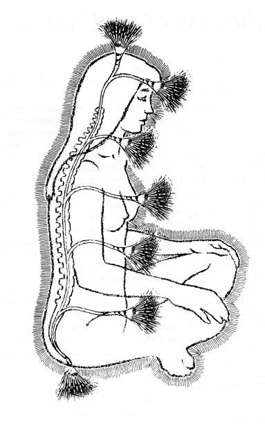
FIGURE 2
Like a flower, a "stem" branches out from our spine into the shape similar to that of a lotus flower. Think of our spine like a central stem.
For most people, the chakras extend about four inches in all directions from their point of origin. When undeveloped, they appear as small circles about two (2) inches in diameter, but when awakened, they are blazing, shimmering whirlpools akin to miniature suns several inches in diameter. As one's development advances, their chakras will extend further from the body, their frequency vibrations will increase and their corresponding colors will become clearer and brighter.
Depending on the sex of the individual, the chakras rotate either clockwise or counter-clockwise. For instance, when a chakra in a man is rotating clockwise, the same chakra in a woman will rotate counter-clockwise and visa versa. This enables the energies of man and woman to compliment each other. Every clockwise rotation is primary male, which is in accordance with the Chinese teaching, Yang; and every counter-clockwise rotation is female, or Ying.
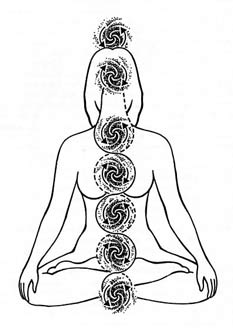
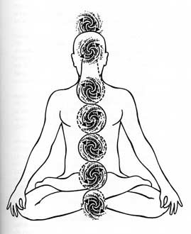
It should be noted, the direction in which a chakra rotates varies from chakra to chakra. Each chakra rotates in a different direction, as these illustrations depict.
The Seven Primary Chakras in the human body are:
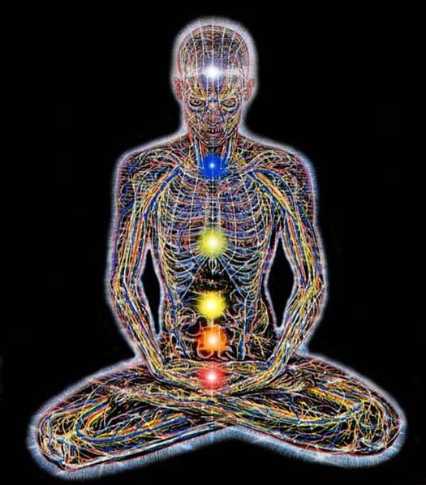
(7) Crown (Third Eye?) Chakra
(6) Third Eye?
(5) Throat Chakra
(4) Heart Chakra
(3) Solar Plexus
(2) Sacral or Spleen Chakra
(1) Root Chakra
The 1st chakra is called the Root chakra. It is located between the anus and the genitals and is connected with the coccyx. The Root Chakra opens downward. When active with vigor, it is fiery red-orange in color.
The 2nd chakra is called the Sacral or Spleen chakra. Located over the spleen, it is sun-like in color and opens towards the front. Sanskrit books always substitute the 2nd sacral chakra with that of the spleen, locating it below the navel instead of at the spleen. My research suggests that there is a danger associated with tampering with the spleen, so perhaps this is why they locate it below the navel. I don't know.
The 3rd chakra is called the Solar Plexus chakra. It is located about two finger-breaths above the navel and is directly connected to our astral or emotional body. Through the solar plexus chakra we absorb the solar energy which nurtures our etheric body, which energizes and maintains our physical body. This is where our emotional (feeling) energy radiates, particularly our "gut feelings." Its color is chiefly green.
The 4th chakra is called the Heart chakra. It is the center of our entire chakra system. It is located in the center of the breast at the level and vicinity of the heart cavity and connects the three LOWER physical and emotional centers to the three HIGHER mental and spiritual centers. It glows a golden color.
The 5th chakra is called the Throat chakra. It is located between the depression in the neck and the larynx, beginning at the cervical vertebra behind the Adam's apple. It starts at the cervical vertebra and opens towards the front. It is also connected to a small secondary chakra, which has its seat in the neck and opens to the back, but since the two chakras are so closely related, they have been integrated into one. Although it has a lot of blue about it, it is also silvery, like moonlight upon rippling water. Blue and green predominate.
The 6th chakra is called the Third Eye? chakra. It is associated with the pituitary gland, which is a very small, shapeless organ about 1/8 inch in diameter located in the forehead about one finger-breath above the bridge of the nose between the eyebrows. Here conscious perception of being takes place. It is the seat of our higher mental powers. On the physical plane, it is the highest center of command for the central nervous system. One half is chiefly rose-colored with a lot of yellow, and the other half is predominantly purplish-blue.
The 7th chakra is called the Crown (Third Eye?) chakra. It is seated in the pineal gland, which is a small organ of fleshy consistency not much larger than the pituitary. The pineal gland is located near and behind the pituitary body almost in the exact center of your head at the level of your ears. The Crown Chakra opens upward, at the top of your head. Interestingly enough, medical science has yet to conclusively determine the physical influence this gland has on the human body (probably because metaphysics is beyond their rational thinking mind.) Although it contains all sorts of prismatic hues, it is predominantly violet.
A FEW WORDS ABOUT THE CROWN CHAKRA
The Crown Chakra is usually the last to be awakened. It is the same size as the other chakras but as the person progresses on the Path of spiritual advancement, it increases steadily until it covers the entire top (crown) of the head.
Like the other chakras, at first the Crown Chakra is a depression in the etheric body and the divine force flows in from without. But when the person realizes his position as the king of the divine light through development of this chakra, the Crown Chakra reverses itself and turns itself inside out! In other words, it no longer is a channel of reception but a channel of radiation; it no longer is a depression but a prominence above the head - it radiates outward like a dome, like a crown of glory!
This illuminated Crown chakra is symbolically represented as the halo above and around the heads of so-called Saints that are glorified on the walls and stained glass windows of churches, and this includes the halo that crowns Jesus Christ! It is an ancient truth that is still used in Christianity today. Sadly, however, its original purpose has been long ago forgotten, or lost - until now!
Now you know the hidden meaning - Truth - behind this symbol.
Yes, this is THE Truth!
Each chakra is perpetually rotating. At the mouth of the chakra, a divine force from the higher world flows. Without this inrush of primary energy, the physical body could not exist.
The chakra centers are in constant operation in all of us. In the undeveloped person, they are usually in sluggish motion, just forming the necessary vortex for the force to enter, and not much more than that. However, in the more evolved person, they may be glowing and pulsating with living light so that an enormous amount of energy passes through them.
The divine energy that pours into each chakra from without sets up at right angles to itself secondary forces in an oscillating circular motion. Think of this like a magnet that produces a current around a coil at right angles to its axis.
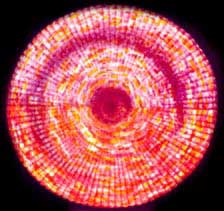
After entering the vortex, the primary force radiates from it at right angles as straight lines, as though the center of the vortex was the hub of a wheel and the radiations of the primary force were the spokes.
The force of these spokes seem to bind the astral and etheric bodies together like grappling-hooks. The number of these spokes differs in each chakra, which determines the number of petals each chakra exhibits. This is why the chakras have been described in oriental books as resembling flowers.
Each of the secondary forces, which sweep around the saucer-shaped depressions, has its own wavelength and moves along large petals of various sizes. The number of petals is determined by the number of spokes in the wheel, and the secondary force weaves itself under and over the radiating currents of the primary force like a basket might be woven around the spokes of a wheel - the number of wavelengths being infinitesimal.
All the petals have a shimmering effect, like the mother-of-pearl, yet each has its own predominant color. This silvery aspects is likened in Sanskrit works to the gleam of moonlight on the surface of the water.
Why are colors associated with the chakras?
Each chakra contains all color variations, although one color always dominates. These colors correspond to the primary task of the chakra. Each globule that I spoke of earlier consist of seven (7) atoms. When these brilliant specks of light are drawn into the vortex of the 2nd (sacral or spleen) chakra, they are decomposed and break up into streams of different colors. As these seven (7) atoms are whirled around the vortex, each of the six spokes of the 2nd chakra seizes upon one of them so that all those charged with yellow flow along one spoke, those charged with green along another spoke, and so on, while the seventh atom disappears through the center of the vortex, or hub of the wheel. These rays then pass off in different directions, each ray destined to its special work in vitalization of the body.
Figure 3 below is a diagrammatic representation of these paths of dispersed prana.
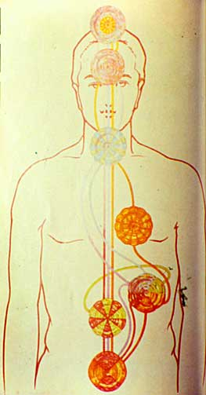
FIGURE 3
It is important to note that the divisions of prana are not like what we normally see in the solar spectrum but resemble the arrangement of colors we see on the higher levels in the causal, mental and astral bodies.
For example, indigo is divided between the violet ray and the blue ray.
Red is divided into two -- rose-red and dark red.
Consequently, the six atom radiants are: violet, blue, green, yellow, orange, and dark red, while the 7th, or rose-red atom passes down through the center of the vortex.
Vitality, therefore, is sevenfold in its constitution, but flowing through the body in five main streams. These five main streams are:(1) the violet-blue ray
(2) the yellow ray
(3) the green ray
(4) the rose ray
(5) the orange-red ray
So it should be no surprise that here is a certain correspondence between the colors of the streams (flow) of prana and the chakras. These streams are:Red Prana color enters the 1st (Root) chakra
Rose prana color enters the 2nd (Sacral or Spleen) chakra
Yellow (or gold) prana color enters the 3rd (Solar Plexus) chakra
Green prana color enters the 4th (Heart) chakra
Light-blue prana color enters the 5th (Throat) chakra
Dark-blue prana color enters the 6th (Third Eye?) chakra
Violet prana color enters the 7th (Crown - Third Eye?) chakra
Sushumna
The most important and fundmental forms of energy enter the human system through the Root and Crown chakras. These two chakras are connected by a nadi called, sushumna.
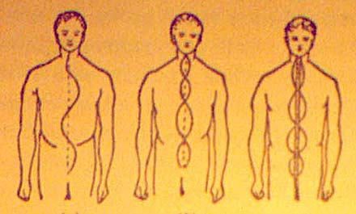
The sushumna runs up and down the central axis of the body within the spine, between the crown (top of the head) and sacrum. The sushumna is also connected to all seven primary chakras via the "stems," which provides each chakra with this vital energy.
This primary current runs "between the sun and earth" - "from heaven above and earth below."
As Above, So Below.
This current induces other currents at right angles to itself, which flow between the spine and the outer edges of our etheric body (aura.) Thus we have a vital etheric body consisting of an interweaving mesh of stream of energy with the spinal current as an axis. This axis actually holds the "etheric body" (our aura) together and gives it coherent form. Think of this like a magnet surrounded by lines of force in which the metal fillings are drawn into a pattern and held in place in a magnetic field.
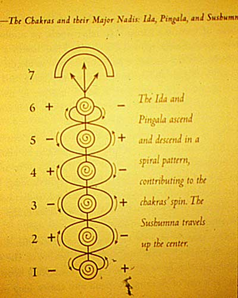
FIGURE 6
Besides the sushumna, there are two additional energy channels that play an important role in our energy system. These channels are known in Sanskrit as: "ida" and "pingala."
The pingala channel is the carrier of solar energy. It is full of heat and drive. It begins on the right hand side of the Root chakra and ends in the upper area of the right nostril.
The ida channel is the carrier of the cool and calming lunar energy. It begins on the left hand side of the Root chakra and ends in the left nostril.
These two channels wind their way around the sushumna from the Root chakra to the nose, meeting at the 6th chakra and polarizing each of the chakras in between, thus contributing to their spin (see Figure 6 above).
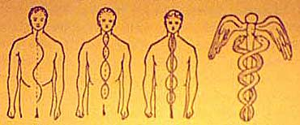
FIGURE 7
Only when one attempts to arouse the energy latent in the inner layers does the dangerous serpent fire begin to show itself. Think of this serpent fire as a ball or sphere of fire, or energy, and the ball is made up of layers, like a ball within a ball within a ball within a ball, etc.
The harmless fire of the outer skin of the ball or sphere travels up the spinal column using the three lines of sushumna, ida and pingala simultaneously.
"It is the pure Akasha that passes up Sushumna and its two aspects flow in Ida and Pingala...Ida and Pingala play along the curved wall of the spinal cord...They are the positive and the negative, the sun and the moon...They have there distinct paths of their own, otherwise they would radiate all over the body." - Madame Blavatsky "The Secret Doctrine"
C.S. Leadbeater in "The Hidden Life in Freemasonry" explains it this way: "...in the First Degree, it effects the Ida, or feminine aspects of the force, thus making it easier for the person to control passion and emotions; in the Second Degree, it is the Pingala, or masculine aspect which is strengthened in order to facilitate control of the mind; but in the Third Degree, it is the central energy itself, the Sushumna, which is aroused, thereby opening the way for the influence of the pure spirit on high. It is passing up through this channel of the Sushumna that a yogi leaves his physical body at will in such a manner that he can retain full consciousness on higher planes and bring back into his physical brain a clear memory of the experience."
The wings of the caduceus depicted in Figure 7 is a symbolic representation of this astral flight.- Now you know the hidden (secret) meaning behind the caduceus symbol :-)
I repeat, at the center of each chakra, in its deepest point, there is a stem-like channel that extends to the spine and merges with it. The chakras are connected to the sushumna via these stems, which provides each chakra with "vital energy."
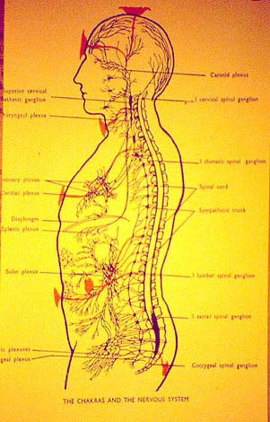
FIGURE 8
In Figure 8 above, you can see the general location of the flower-like chakras, their respective stem, and the location of their connection to the spinal cord.
As you can see, the stem bends downwards, it droops if you will, in the coeliac (or solar plexus) cardiac (heart) plexus, and the throat plexus. The reason for this involves the cerebro-spinal and sympathetic nervous systems, which I am not going to explain here.
Before we leave this segment, it should be noted that the Crown Chakra is NOT connected with any of the sympathetic plexus of the physical body.The Crown Chakra is associated with the pineal gland and pituitary body and is related to the development of the brain and spinal system of nerves.
The pineal gland is separated from the pituitary gland by a heavy cartilaginous tissue. For many, the astral vortices corresponding to the 6th and 7th chakras converge upon the pituitary body - the pituitary body being the only direct link between the physical and the higher planes.
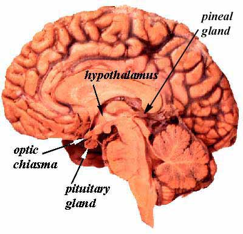
For another type of people, the pituitary vortex is bent, or slanted until it coincides with the pineal organ, which is vivified and made into a line of communication directly with the lower mental plane without having to pass through the intermediate astral plane in the ordinary way.
The goal here is to develop and bridge the 6th and 7th chakras, creating an avenue of communication between them. This connecting link is called the antahkarana, or simply, the psychic bridge.
The antahkarana is the link between your personality and your Higher SELF.
As you develop these higher chakras, this psychic bridge is enlarged and strengthened, and so will be your intuitive powers or abilities. Note: This break-through in separation between the higher and lower halves of the head center is NOT like cutting through or puncturing the bone or tissue; This channel or bridge is created in the psychic areas and NOT in the physical sense.
The 6th chakra is associated with the pituitary gland, and the 7th chakra is associated with the pineal gland.
Some text say the 6th chakra (Pituitary Gland) is the human Third Eye, whereas other text say the Pineal Gland is the human Third Eye, with biological evidence to suggest that perhaps it WAS a real, physical-biological Third Eye at one time long ago during our early mammalian evolution. I find this theory very interesting.
So what is it?
After musing over a wealth of research information, I think they may be one of the same, meaning, they work in tandum with each other. You cannot SEE with your Third Eye without developing both the pituitary and pineal glands simultaneously. In other words, only when the 6th and 7th chakras are developed will the Third Eye open for you to see with.
The Pituitary Gland
The pituitary gland is a roundish organ, about the size of a pea, located just behind the bridge of the nose in the center and at the base of the skull/brain in a depression called the sella turcjca ("Turkish saddle"). It weighs about 1/2 gram (0.018 oz) produces 0.00001 grams of hormone per day, and is attached to the hypothalamus via nerve fibers. It is an important link between the nervous system and the endocrine system.
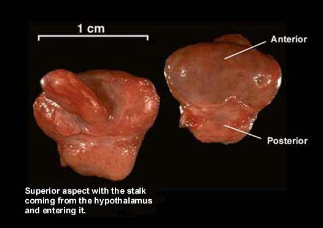
The pituitary gland consist of three lobes:(1) anterior (secretes protein hormones)
(2) intermediate
(3) posterior (is an extension of the hypothalumous)
Each lobe produces and releases hormones that affect growth, sexual development, metabolism and the reproduction system, particularly the ovaries and testes as well as the adrenal, kidneys, breasts, intestines, bladder, uterus, stomach and spleen.
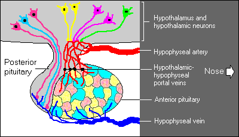
The posterior is composed of axons of hypothalamic neurons that extend downward as a large bundle behind the anterior. It also forms the pituitary stalk, which appears to suspend the anterior from the hypothalamous.
The above image on the is the frontal view of the pituitary gland and hypothalamus of a sheep. This image will hopefully give you some idea how the parts of this organ fit together.
Hormone secretion from the anterior pituitary is strictly controlled by hypothalamus hormones. The "hypothalamus" is a cluster of brain cells just above the pituitary gland, which transmits messages from the body to the brain.
For years, the pituitary gland was believed to be the master gland of the body, but now we know that the "hypothalamus" is the true "master gland" of the body. The hypothalamus is the link between the pituitary gland and the brain. It is akin to a way station between the body and the brain. It sorts out the messages to and from the body and responds accordingly through the pituitary gland.
The hypothalamus replies to the needs of the body by nerve impulses to the pituitary gland, which in turn produces the hormones the body's needs. These hormones are then circulated in the blood to the body's tissues, including other endocrines.
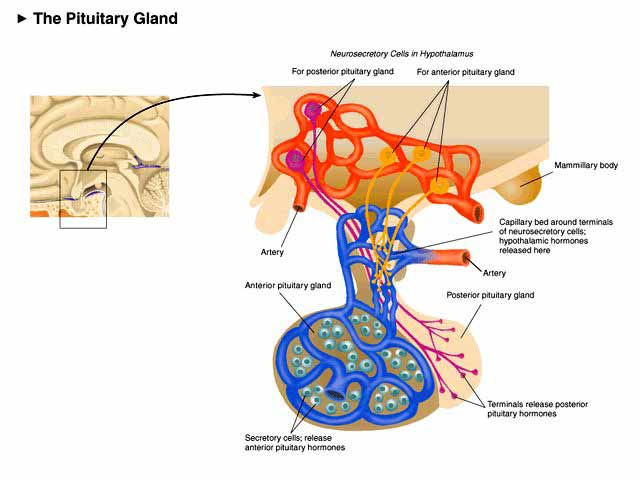
Now you know the basic physiological/biological purpose of the pituitary gland.
But what does the pituitary gland have to do with the 6th chakra? and the Third Eye?
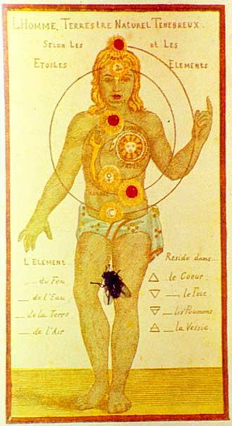
The fly landed on the page just as I snapped the photo :-)
In essence, the chakras are akin to sense-organs for the astral body. They are NOT organs in the ordinary sense of the word, since it is not through them that a person sees or hears, as they would through their eyes and ears, but rather sense-organs that when functioning give the person the ability to see objects behind them, above them, and beneath them without turning their head.
Do you see?
The seven primary chakras can be classified into three groups:
(1) Lower
(2) Middle
(3) and Higher
The Lower chakra group consist of the Root and Sacral or Spleen Chakras, which are principally concerned with receiving into the body two forces: the serpent-fire (from the earth) and the "vitality" force from the sun.
The Middle chakra group consists of the Solar Plexus, Heart, and Throat Chakras. These chakras are engaged with the forces that involve the human personality. These chakras seem to feed certain ganglia, or nerve centers in the body.
The Higher chakra group involves the 6th and Crown (Third Eye) chakras. These chakras stand apart from them all. They come into action only when a certain amount of spiritual development has taken place.
Here are some VERY, VERY, VERY BRIEF tid bits of information about what the Middle and Higher chakra's influence may have upon the person:
SOLAR PLEXUS Chakra (3rd chakra)
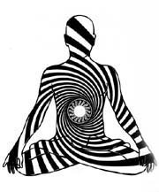
When the Solar Plexus Chakra is open or activated, the person begins to be conscious of all kinds of astral influences, vaguely feeling some are friendly and others are hostile, some pleasant and others unpleasant, all without knowing why.
HEART Chakra (4th chakra)
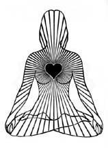
Stimulation of the Heart Chakra makes the person instinctively aware of the joys and sorrows of others. You essentially feel the feelings of others. This psychic ability has an adverse downside - you may be easily effected by another person's emotional feelings, thus altering your own without knowing it.
THROAT Chakra (5th chakra)
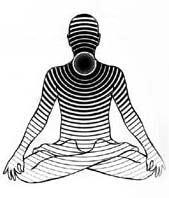
Arousal of the Throat Chakra enables the person to hear voices, which sometimes makes all kinds of suggestions to you. Sometimes they even hear music, or less pleasant sounds. You become somewhat clairaudient, as least as far as the etheric and astral planes are concerned.
6th Chakra (Third Eye?)
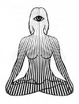
When the Third Eye Chakra is awakened, the person begins to see things. You may see waking visions, sometimes places, sometimes people. At first these sightings are often partial landscapes and clouds of color, whereas the full arousal brings about clairvoyance.
The Third Eye Chakra is connected with sight in another way, too. A tiny, flexible tube of etheric matter is projected from the center of the pituitary gland, which resembles a microscopic snake with and eye at the end of it. The eye at the end can be expanded or contracted, the effect being to change the power of magnification according to the size of the object being examined. This is what is meant in ancient books as: the capacity to make oneself large or small at will. For example, in order to examine an atom, one must develop an organ of vision commensurate in size with the atom. Do you see? (If you have no idea what I am talking about, no problem. You belong to the average mass of humanity. These esoteric truths have been carefully guarded secrets throughout the ages. I reveal these tiny little clues to you simply because I believe it is time for many of you to know - especially those of you who are still with me and reading this.)
Furthermore, FYI, this little snake that projects from the center of the forehead (as described in the paragraph above) was symbolized in ancient Egypt on their royal headdress as a cobra snake. This symbolized that the person wearing the headdress possessed the abilities (as described above) and other occult powers.
This symbolic headdress portrayed them as an Initiate of the Mysteries. Unfortunately, in later dynasties, when the government (Pharoah) and the secret Initiation order (Priests and Priestesses) parted their ways, the cobra snake became more and more of an ornament, paying little more than lip service to its original symbolic purpose until it eventually became totally discarded and forgotten altogether.
Now you know the hidden (secret/sacred) meaning behind this symbolic headdress that was worn in ancient Egypt.
CROWN Chakra - Third Eye (7th chakra)
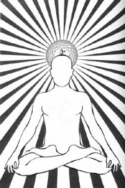
When the Crown Chakra is awakened, the person is able to pass through it and leave the body in full consciousness, and return to it without the usual break so that their consciousness will be continuous through night and day.
What Is Kundalini ?
Kundalini is an invisible force, but in the human body it is clothed in a nest of hollow concentric spheres of astral and etheric matter, one within the other.There are seven (7) concentric spheres resting within the Root Chakra (in an around the last hollow of the spine close to the coccyx.) In the ordinary human, the only force active is the outermost sphere; the other spheres are asleep.
In order to bring your Root (1st) Chakra into full activity is to awaken these inner spheres, and it is THIS force that arouses or awakens (activates) the rest of the chakras.
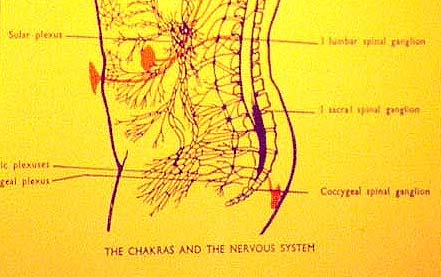
The kundalini power lies at rest at the lower end of the spine like a "coiled snake" and enters the system through the Root Chakra. The kundalini power flows through the sushumna in a mere trickle in most people. But when it is awakened, it rises up the sushumna like a growing stream, activating the chakras, supplying them with vibrations, causing them to expand and increase their vibrational frequency.
As the kundalini rises, its energy is transformed into various vibrations, corresponding to each individual chakra (ie. it is lowest at the Root Chakra and highest at the Crown Chakra.) The degree of each chakra's performance is determined by the degree of consciousness (awareness) the person has attained in the various areas of his/her life, and whether they are blocked by stress and / or unresolved experiences. The more conscious a person is, the more active and open their chakras will be and the more kundalini that will be able to enter their body and flow like a strong flowing stream.
Please read the following page carefully:
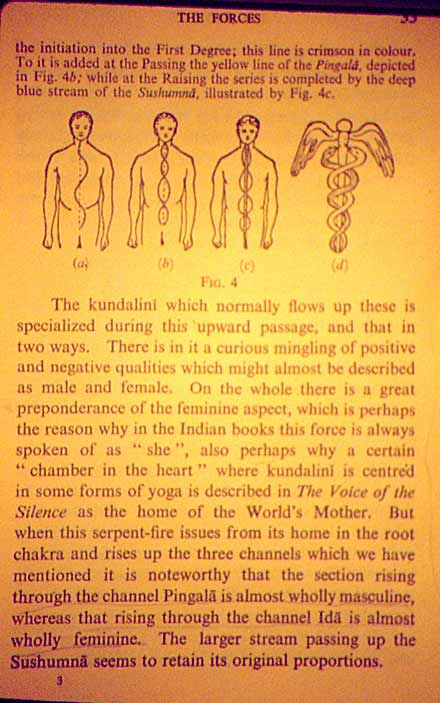
A Kundalini Journey through the Chakras
Here is a very, very, very BRIEF description:
1. When the serpent-fire is awakened in the person at the "astral" level, it moves on to the Sacral (2nd) chakra, which corresponds to the physical spleen, and through it, vitalizes the whole astral body;
2. Then it moves on to the Solar Plexus (3rd) chakra, vivifying it, awakening in the astral body the power of feeling, a sensitivity to all sorts of influences;
3. Then it moves on to the Heart (4th) chakra, which when awakened endows the person with a power to comprehend and sypathize with the vibrations of other astral entities in a way that they can instinctively understand something of their feelings;
4. Then it moves on to the Throat (5th) chakra, awakening / activating it, giving the person the power of hearing on the astral plane;
5. Then it moves on to the 6th - Third Eye chakra, which when developed and awakened (activated) produces astral sight;
6. Finally, when it awakens or activates the Crown - Third Eye (7th) chakra, which corresponds to the top of the head, it completes the astral life.
Vague, huh?
Sorry, but it must be this way for now.
Think of Kundalini as a LIQUID FIRE that rushes through the body when it has been aroused by the will - emphasized, your WILL. When it has been aroused, it spirals up your spine like the coils of a snake.
For the ordinary person, it lies at the base of the spine, unawakened, asleep, its very presence unsuspected for their whole life.
But there are various methods you can use to awaken the kundalini power. Some of these methods involve the use of your will, peculiar modes of breathing (exercises), mantras, various postures and movements, et cetera.
IMPORTANT
It is said that it is better to allow the kundalini power to remain dormant until the person has made definite moral development, until the will is strong enough to control it, and their thoughts are pure enough to enable them to awaken it without injury.
BUT MOST IMPORTANTLY
Nobody should tamper or "experiment" with it without the instruction of a Teacher who thoroughly understands the subject, because the dangers associated with it are very real and terribly serious.
The DANGERous Side
If the kundalini power is uncontrolled, it often produces intense physical pain - it may tear tissue and even destroy physical life. But, strange as it may seem, these are the least of its evils - it can do permanent injury to vehicles higher than the physical.
If awakened prematurely, one commone effect is that the kundalini power rushes downwards in the body instead of upward, exciting the most undesirable passions, making it impossible for the person to resist them. Such people become monsters of depravity. They may gain supernormal powers but they will be connected with the "lower" order of evolution, something that may take more than one incarnation to overcome.
Other unpleasant possibilities involve the mental body. For example, ambition is quickly aroused which swells to an incredible degree. Ambition will rule your being! It may bring a great power of intellect but at the same time produce abnormal and satanic pride, inconceivable to the ordinary person.
Kundalini is no ordinary energy. It is restless. Only under the guidance of a Master, who watches over them, should one attempt to awaken these tremendous forces. In the words of The Hathayoga Pradipika: "Kundalini power gives liberation to yogis, and bondage to fools."
In addition to kundalini, there is another energy that enters the body through the Crown Chakra (the top of your head) and flows down / through the spine to each individual chakra. It is a pure and divine vital energy. The archaic teachings in India call this energy, the god Shiva, whose mere presence initiates the transformation towards the Divine.
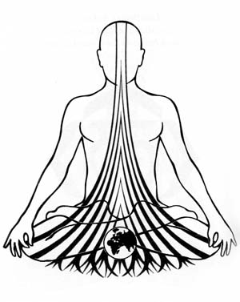
Remember, the chakras act as receivers of the energy vibrations and information that transcends the physical realm -- openings that are connecting us with the unlimited universe of subtle energies.
It should be noted that the chakras also radiate energy into our surrounding environment. Through our chakras, we can send out loving and healing vibrations and conscious or subconscious messages, which can and will influence the people around us (near or far away) as well as situations and even physical matter, all in a positive or negative light. So think about that.
Most of us are so engrossed in our physical consciousness that we know nothing about astral awakening. The only way we can bring our dense bodies to share all these wondrous unseen advantages is by repetitious exercising the process of awakening our chakras - and I mean repetitious exercising.
How can you awaken your chakras?
You can awaken your chakras in a variety of ways, which you can learn from a variety of books. But most importantly, I cannot emphasize enough, that in order to be successful in this endeavor, it will require a "very determined and a long continued effort of your WILL." As simple as these exercises may seem to be, your lack of willpower will defeat you every time. You must work at it on a daily basis. YOU MUST DO THE WORK!
The next series of pages will guide you through a number of techniques and exercises that are designed to help awaken/open/activate your chakras and your Higher Self, including enhancing your psychic abilities, illuminating your higher consciousness, and even opening the window and, or door in your conscious mind to the Astral World.
Some of these techniques and exercises are highly guarded secrets that have been studied, practiced and understood only in esoteric schools throughout the ages. Knowing that, some people may feel uncomfortable that these secret techniques and exercises are being revealed to the masses, believing they should be kept secret and preserved for only "those in the know."
Well, my response to them is simply: Don't worry. 99.999% of the population of the planet will not understand most if not all that is revealed, and even if they could or would, nearly all of them will fail miserably because they will NOT have the patience, diligence, and willpower to practice and perfect these techniques and exercises. These techniques and exercises are NOT for those who want to dabble and play, but for those of you who are truly interested and who WILL succeed. Like the saying goes, "you can lead a horse to water, but you cannot make them drink."
So with all that said, I want you to know that you do not need to possess any clairvoyant skills or talents to work with your chakras effectively. All you need is knowledge. Understanding your chakras will help you gain invaluable information about yourSELF and enable you to live a better life full of abundance and joy. I can almost guarantee it.
http://www.rickrichards.com/Chakras.htm